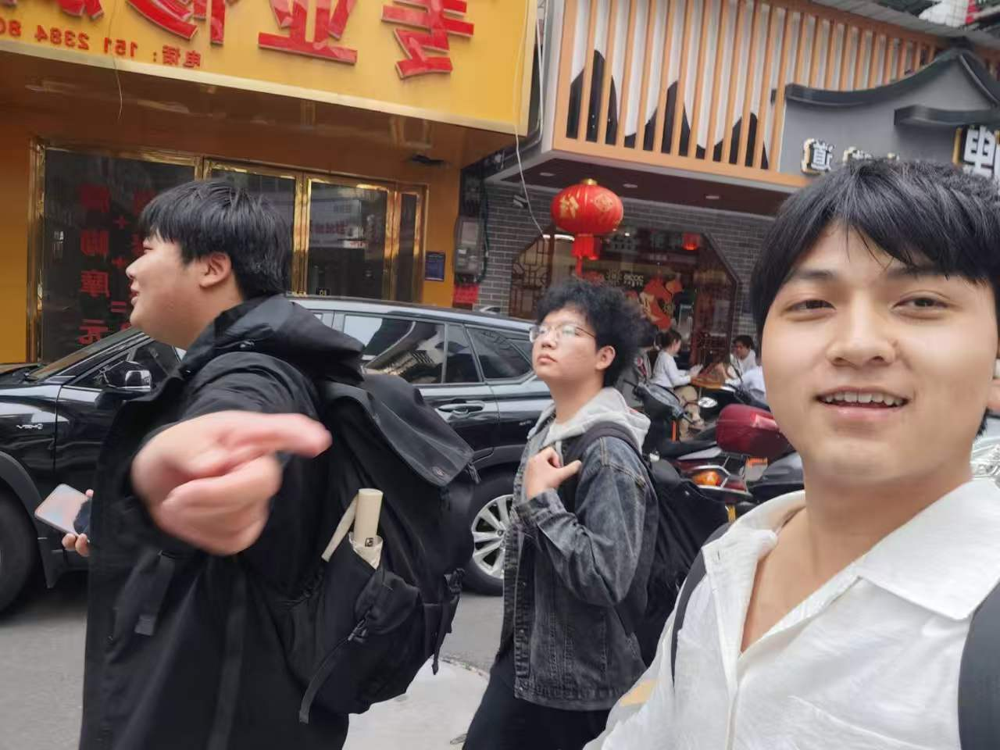
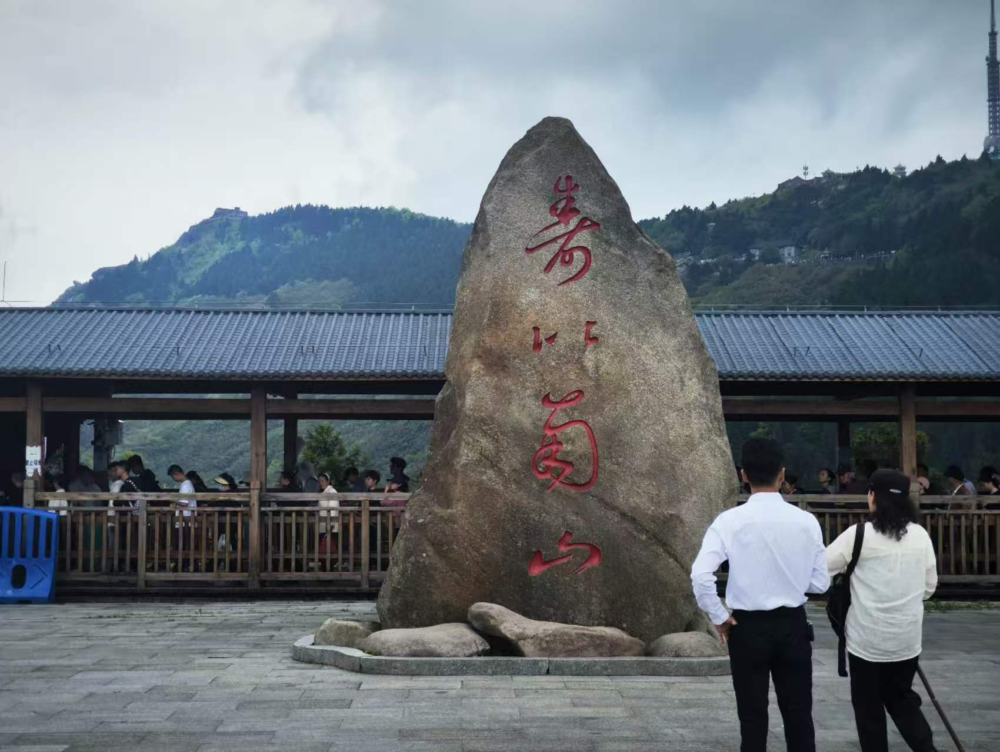
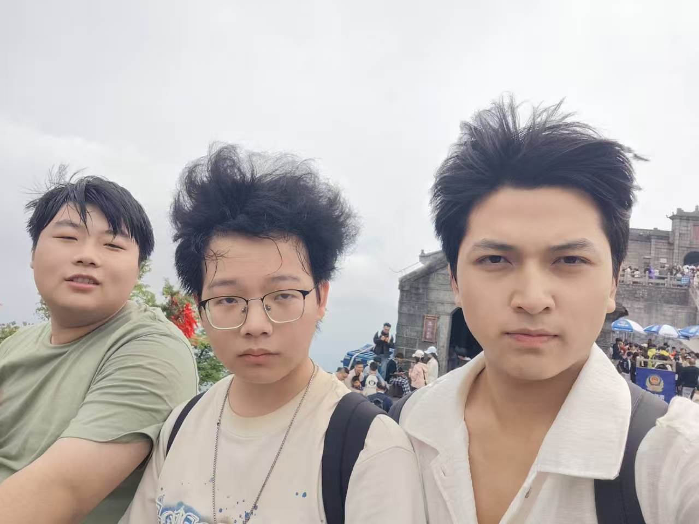
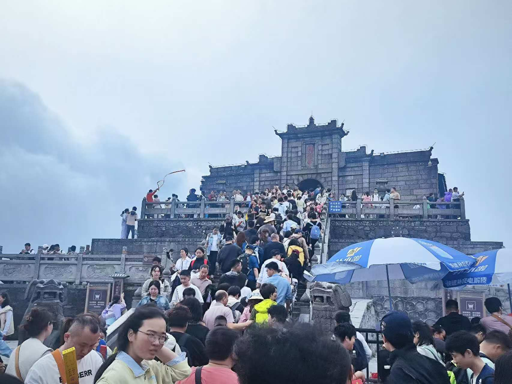
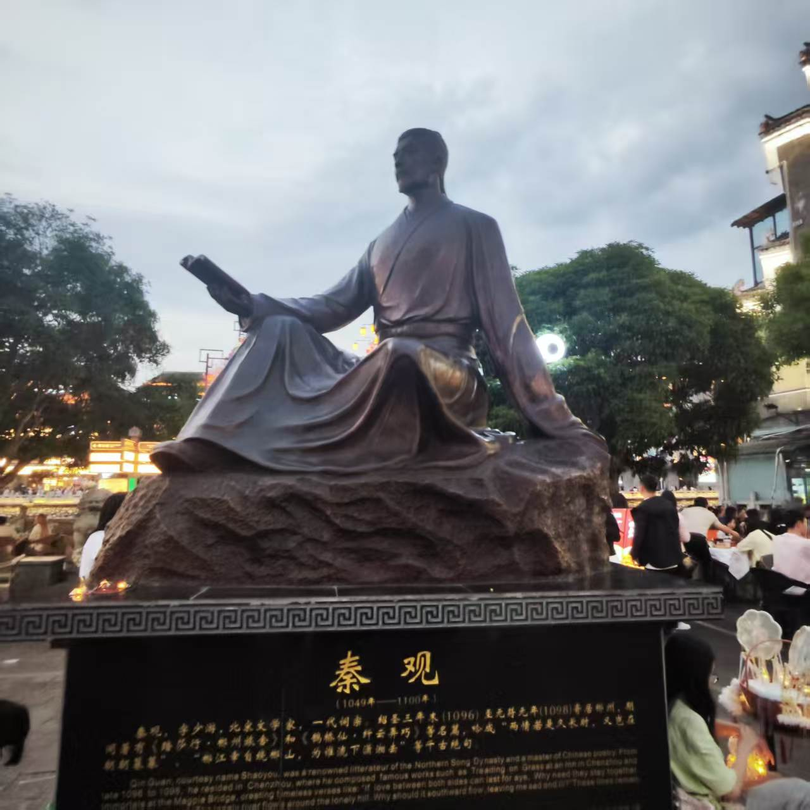
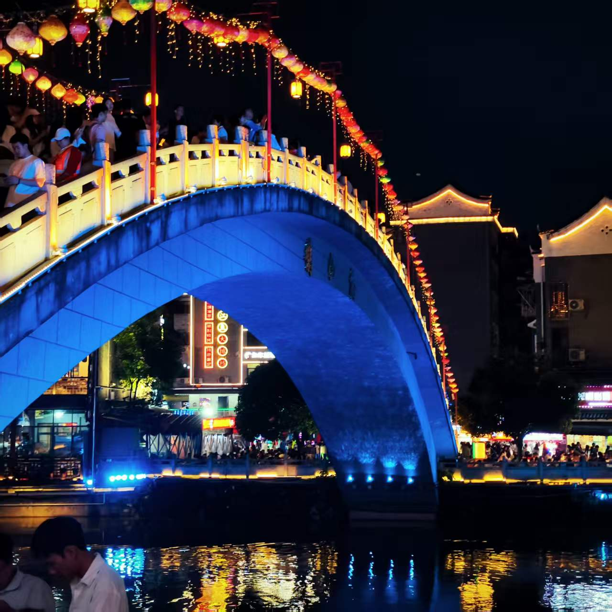
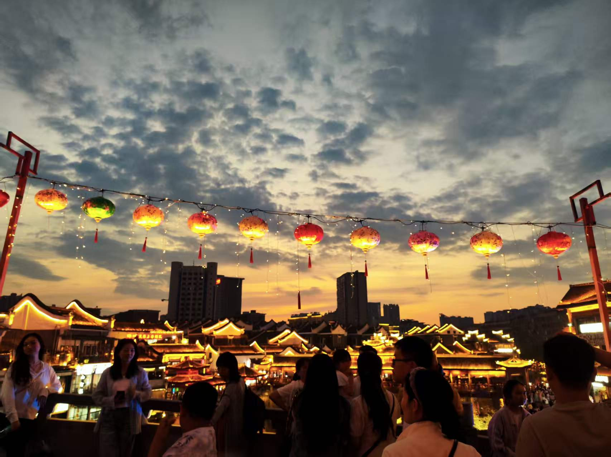

旅行故事

跨越千里的相聚
2026年五一，我们三个从不同的地方奔赴湖南衡山。大白从河南师范大学坐了十几个小时的硬座，晓斌从三峡大学赶来，而我从广州出发。
虽然路途遥远，但对于三个屌丝来说，这些都不重要，无论相隔多远，只要想见，就一定能见到。嘶嘶~说的有点肉麻。

终于汇合了！
在民宿楼下，我们三个终于汇合了。虽然大家都有些疲惫，但脸上都挂着开心的笑容。
接下来的几天，就是我们三个的快乐时光了！

胜利坊：我们出发了！
5月2号早上，我们来到了衡山的起点——胜利坊。在这里，我们拍下了第一张较为正式的合照，也立下了今天的目标：登顶祝融峰！
晓斌没去之前他是觉得我们爬不上去的，但感觉就他走的最快。大白还是走到哪笑到哪，丝毫没看出来一点压力，我嘛，这次膝盖要遭老罪了。

登山初期：活力满满
刚开始爬山，大家都还活力满满。大白笑得特别开心，完全看不出坐了十几个小时火车的疲惫。
晓斌也一改之前"爬不上去"的说法，走在最前面带路。

开始累了...
爬了大概两个小时，大家都开始有点累了。大白直接坐在路边休息，手里还拿着一根"登山杖"。
虽然嘴上喊着累，但他脸上还是挂着那标志性的笑容。

继续攀登
休息了一会儿，我们继续往上爬。山路越来越陡，但我们都没有放弃。
一路上我们说说笑笑，互相鼓励，时间过得也挺快的。

南天门：胜利在望
经过几个小时的艰苦攀登，我们终于他么的到达了这个南天门，感觉途中看见了好几次这个地标。
"这座古老的石牌坊矗立在山间，仿佛在告诉我们：只要坚持，就一定能到达目的地。在这里，我们看到了著名的"寿比南山"石刻，也感受到了衡山深厚的文化底蕴。"一股AI味~
从南天门到祝融峰还有最后一段路，没记错的话是2.5公里，哈哈

寿比南山
在南天门附近，我们看到了著名的"寿比南山"石刻。很多人在这里拍照留念。
我们也凑了个热闹，希望我们三个都能健康长寿，友谊长存！

最后的倔强
从南天门出发，开始了最后的冲刺。这回明显风变大了，广播上也在催促着游客抓紧时间下山，可能会下雨。
但路上上山的人还是不少的，继续走吧，来都来了嘛。

将近峰顶
越往上走，风景越美。远处的群山连绵起伏，云雾缭绕，像仙境一样。
我们已经能看到祝融峰的山顶了，胜利就在眼前！

登顶祝融峰！
我们终于站在了衡山之巅——祝融峰！算下来，经过五个小时多的艰苦攀登。
果然天气不太好，这风更大，但山顶上依然人山人海。旁边的有个拍照打卡点，但是吧，挤满了人。
我们在祝融殿前拍下了个照，拿出提前准备好的"勇闯天涯"，为登上顶装下杯，买了三瓶，结果三人喝了一瓶。
说巧不巧，开始下雨了，也好，旁边的香烟熏得难受，这里好多是带香上山的，来拜佛求道吧，应该。

登顶大合照
在祝融殿前，我们拍下了这次旅行最重要的一张合照——登顶大合照！
虽然大家都很累，头发也被风吹得乱七八糟，但脸上都写满了成就感。
五个小时的汗水，在这一刻都值得了！

下山：疲惫不堪
拍了他么有一个小时的队吧，终于也是坐上了下山的车。
说实话还是有点吓人的，这么高，这路上他么刚才下雨还有点湿，好在安全下山。
晓斌一上车就靠在我的肩膀上睡着了，睡得特别香。看来今天真的把他累坏了。

第二站郴州：难评
来到了屌毛心心念念的郴州，一方面时间没那么多，这的好多景点没怎么逛，几乎没逛。
三号下午到的郴州，因为前一天爬山爬的有点虚，直接民宿躺到了晚上。四号出来瞅瞅。
总评就是：一坨屎。

秦观与鹊桥仙
我们去了裕后街，看到了秦观的雕像。据说这里就是他写《鹊桥仙》的地方。
"两情若是久长时，又岂在朝朝暮暮。" 可惜我们三个都是单身狗，体会不到这种感觉。

鹊桥夜景
晚上的裕后街还是挺漂亮的，特别是这座鹊桥，挂满了灯笼，灯光璀璨。
景色也就那样吧，拍出来的照片还能看。但真的是三个单身狗走在上面，主打一个格格不入。

旅程结束
逛完裕后街，我们就各自乘车回学校了。这个极快而又短暂的五一假期，就这样结束了。
虽然很累，虽然郴州有点坑，但和好朋友在一起的时光总是快乐的。
期待我们下一次的旅行！